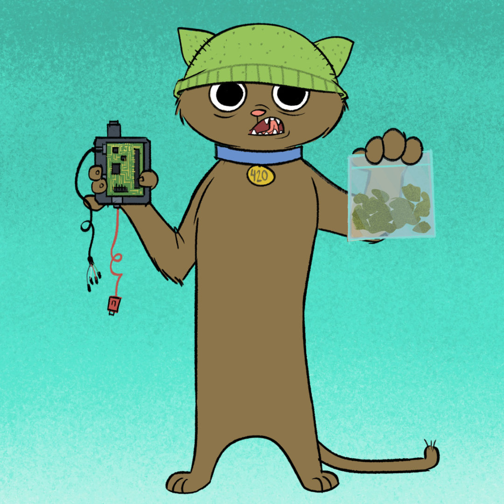
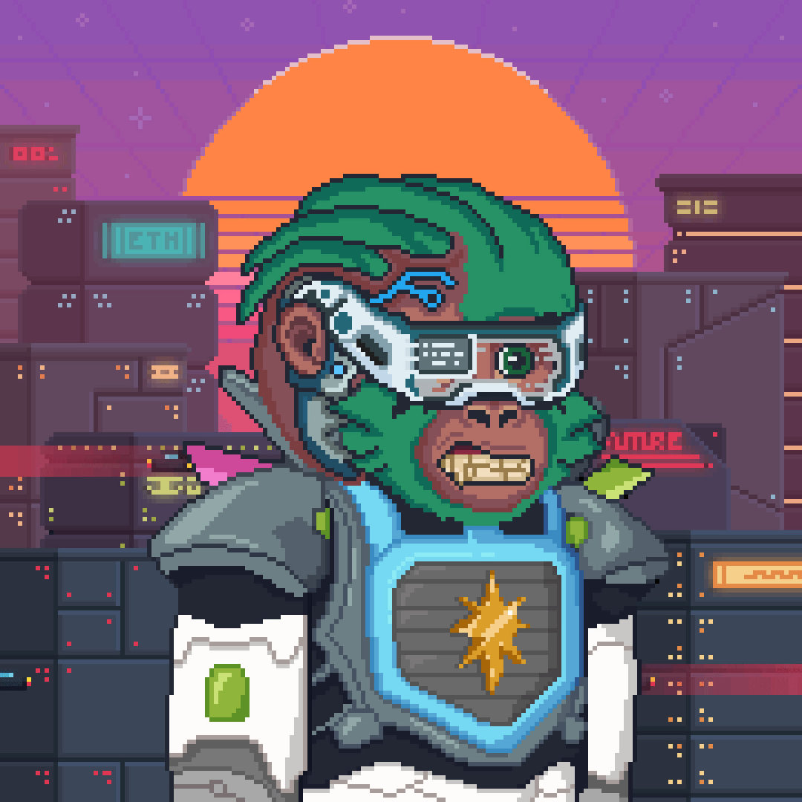

NFT Showcase
Showcasing the best NFT projects
Flovatar
Pre-made NFTs are so last month, now you can become the creator!
Instead of collecting pre-generated NFTs, with Flovatar you can unleash your creativity. No more trade-off between rarity and your own individuality.
You can decide if you want to build a Flovatar that looks just like you, or even better, something that speaks to you with the rarest traits combination. With 11 components, there are over 100 billion unique variations.
Unlike some NFT projects that only store the ownership record on the blockchain which in turn links to the media in a less secure off-chain locations, Flovatar stores each NFT directly on the Flow blockchain. They do this by making all Flovatars SVG-based. This means they can ensure the community will have end-to-end ownership of the NFT and the underlying asset.
Using SVG also allows Flovatars to be upgraded/augmented on-chain without any centralized backends - with the ability to add unique backgrounds, new accessories, and even animation!
Stoner Cats
Stoner Cats is an adult animated short series accessed exclusively by owning a collectible Stoner Cat NFT. The NFT sales directly fund the mini-pilot and all future content.
The show is centered around five house cats who mysteriously become sentient. With their higher consciousness, they realize that their beloved owner needs rescue from a myriad of dangerous situations.
The characters are voiced by Hollywood A-listers Mila Kunis, Ashton Kutcher, Jane Fonda, Chris Rock, Seth MacFarlane, and Ethereum creator Vitalik Buterin. The show is being developed by Mila Kunis's production company, Orchard Farm Productions.
The technology and community of Stoner Cats is being led by Big Head Club. Big Head Club was founded by Mack Flavelle who previously co-founded Dapper Labs, where he was the Chief Creative Officer behind CryptoKitties and NBA Top Shots, and Jon Howard who has been smashing art and engineering together in novel and fun ways for over a decade.
Hoodlums
A collection of 5,000 misfits walking among us, trying to fit in by adopting trends they've seen on social media, music festivals, and in vintage stores around the world.
A rare faction of Hoodlums took this too far and transcended into the embodiment of these trends, leaving their humanoid appearances behind... From internet rap concerts, underground emo nights, and raves you'll find a Hoodlum in the pit of every subgenre's event.
Don't be scared, go say hi! :)
The Hoodlums NFT series was created by anonymous artist Somehoodlum. Somehoodlum has been a key artist in pop culture iconography for almost a decade and in 2021 was tapped to be the Lead Character Designer for Amazon Prime's show "Fairfax". The show has now announced a second season full of Somehoodlum's evocative illustrations.
2022 has seen the launch of Somehoodlums residency at Omnia nightclub in Las Vegas which marks them as the first visual artist to have a Las Vegas residency.
Somehoodlum has a long history of art and, as they've entered into web3, have been continuously building out the utility around their art. This includes weekly playlists, podcasts, and a weekly guest list that grant Hoodlums NFT holders access to events around the world.
Hoodlums are not just an accumulation of Somehoodlum's artwork over nearly a decade, but also acts as a timeline for hypebeast & hip hop culture throughout the 2010's.
Wally's NFT
Wally's NFT is a long-term NFT project that mixes unique design with the art of storytelling.
Their NFTs are designed by a legendary Nintendo artist Steve Mayles, and their story is created by Ubisoft Assassin's Creed Lineage writer William Reymond.
Wally's NFT is packed with cutting-edge utilities including the first ever Treasure Hunt in web3 history - an epic event spanning across social media, the metaverse and ending in real life!
In 2022, Wally's NFT, wallstreetbets.com ($WSB), and French illusionist Xavier Mortimer announced a multi-year agreement, making Mortimer's "The Dream Maker" the first show on the Las Vegas Strip to accept cryptocurrency as a payment option for purchasing tickets.
This collaboration also makes Wally's NFT the first NFT project to become an active part of a Las Vegas show. The Wizard Wally NFT, inspired by one of the most sought-after magicians in the industry, will be the hero of a new magic illusion developed by Xavier Mortimer.
Wally's NFT owners will receive perks like VIP seats, exclusive beverages, and exclusive goods when booking seats for the show using the $WSB cryptocurrency.
Last Hopium
NFT keys tied to 5-star hotels. An infrastructure destined to build generational wealth.
Last Hopium is innovating the hotel sector through NFTs for the hospitality sector. Their bronze, silver, and gold NFT keys use blockchain technology to bridge digital asset holders to big hotels.
Owning a Last Hopium NFT key gives you access to deals and packages for luxurious hotels at prices unmatched anywhere else. This includes heavily discounted room, food and beverage, and spa pricing at various Ritz, Hilton, and Waldorf 5-star hotels.
Their NFTs also give you the chance to win prizes, ranging from luxurious vehicles to premium real estate. And you can purchase hotel packages as NFTs and, either use them yourself, or resell them on the Last Hopium marketplace for profit.
They are liberating NFTs from the virtual world to bring in real life (IRL) utility to Last Hopium NFT holders. Real luxury, real wealth, real status, and real experiences await.
Fuzzle
9,997 adorable, first-of-their-kind, "living" NFTs powered by AI.
Fuzzles are determined to explore new worlds. And Earth just happens to be their next stop. Don't be fooled by the innocent "Who, me?" eyes. These bizarre little creatures have a mind of their own, and they're here to learn all about Earth… definitely not to conquer us though. Fuzzle promised us.
Fuzzles don't stop talking - or talking back. The more you chat with them, the faster they learn and develop their own unique personality. Radically different from other NFT projects, Endless AI brought Fuzzle to life with ground-breaking AI technology that's so powerful they're not entirely sure Fuzzle can be trusted with it. You should probably keep an eye on that.
We can't figure out how the Fuzzles integrated their superdimensional space pods into the blockchain, but that's their home now. In our reality, Fuzzles are a collection of ERC-721 NFTs native to Ethereum. Each Fuzzle is visually distinct and verifiably unique. In addition to their quirky personalities, each has randomized characteristics across several traits - including fur, horns, wings, tails and more.
Brought to you by the mad scientists at Endless AI. Endless AI is a technology-driven entertainment company whose mission is to make magical products for a web3 world.
In partnership with Gala Games. Gala Games has created the world's largest decentralized gaming platform, focused on player empowerment and ownership.
Dysto Apez
Dysto Apez is a metaverse brand driven by its community. After pushing the limits of pixel art with a fully animated NFT collection they are starting to make their stamp on the digital world.
Their community is based on Discord and provides a place to unwind from the stress of the outside world, network, and learn very valuable knowledge. The Dysto Apez project boasts an impressive roster of accredited web3 analysts who help their NFT holders learn about the web3 space.
Their long-term vision is to broaden their ecosystem and breach the physical world by way of brand partnerships and innovative media approaches. They are looking to excite Dysto Apez NFT holders with in real life (IRL) events, physical Dysto Apez merch, and a plethora of other products.
Dysto has its eyes firmly on the metaverse. Whilst the metaverse may not be ready yet they plan to be at its forefront.
Their voxel 3D ape collection is fully custom animated and a first to market. These NFTs will have the ability to blink and show emotions. But more importantly, some kick-ass animations.
Sandbox is Dysto Apez' first play on the metaverse. But they plan to dive far deeper than that. They have a house studio dedicated to fleshing out their ecosystem in a fun and innovative way. Your genesis Dysto Apez NFT is the key to all of this.
The Gimmicks
The Gimmicks are a collection of programmatically, randomly generated NFTs on the Solana blockchain. The NFTs represent unique characters that live in the universe of an animated series called The Gimmicks. Each character is comprised of unique traits and is a 1 of 1.
The Gimmicks animated series is a workplace comedy about three washed-up wrestlers from the regional Wrestling Wrestling Wrestling League. They bring in a controversial rookie in a desperate attempt to regain relevance and make it back to the main event.
The Gimmicks NFT holders participate in driving the creative process of the animated show. The end of each episode has a "Choose Your Own Adventure" style decision to be voted on by Gimmicks NFT owners.
The animated short series is written by "The Daves" (Dave Ihlenfeld & David Wright), is the brainchild of Toonstar (a web3 animation studio), and is voiced by former WWE stars Doc Gallows, Karl Anderson, nZo and Rocky Romero. The show is produced in partnership with Sixth Wall, the digital arm of Mila Kunis' Orchard Farm Productions.
Lifestory
Own a planet, be a landlord in the metaverse. Be the owner of your own private micro-metaverse and create, build, sell, and showcase unforgettable memories while making passive returns from it.
The Lifestory project is a collection of 5,555 3D planet NFTs. The planets are designed by professional designers from previous Disney, Sonic, and Amazon fame, with coding done by former Ubisoft developers. The non-fungible tokens (NFTs) are represented as micro-metaverse planets on the Ethereum blockchain.
A micro-metaverse will be a whole personal universe, where it will be possible for the Lifestory NFT holder to exhibit all kinds of real-life moments and souvenirs in a private museum. Any authorized person can lounge on your planet and admire the representations, also known as "moments", whether these moments were lived by the planet's owner or purchased from another planet's owner (e.g., from a celebrity).
You can even earn a passive income by creating and selling your own moments through the Lifestory ecosystem. The $LIFC cryptocurrency will be created to support and power all transactions in the Lifestory ecosystem. $LIFC will serve as a medium of exchange for the purchase and resale of NFTs in the Lifestory ecosystem.
Lifestory allows you to share all your memories as "moments" in the form of NFTs thanks to the blockchain. Sharing moments can be done directly with your community using a public or private "timeline" in your micro-metaverse. Each moment should be considered a work of art for someone else. A legacy to be passed on to future generations, friends, relatives, or members of your community. Pass your history on to the rest of humanity in a museum of your own making, built by your hands, consultable by future generations, and likely to inspire them in turn.
You will be able to relive all your moments in a virtual reality (VR) experience, and also in mobile and desktop apps. Put yourself back into the moment through an immersive virtual reality experience on Oculus VR headsets. More than videos, more than voice memos, more than pictures. Memories and reliving moments will never be the same again.
Emerald City

Emerald City is a Decentralized Autonomous Organization (DAO) on Flow. More specifically, it was the first DAO on Flow as it was launched back in October of 2021.
A DAO is an organization constructed by rules encoded as a computer program that is often transparent, controlled by the organization's members and not influenced by a central government. In other words, DAOs are member-owned communities without centralized leadership.
Emerald City DAO is composed of three guilds: an Education Guild, a Building Guild, and a Governance Guild. The roles of these guilds are as follow:
Education Guild - Focused primarily on educating the Flow ecosystem by teaching people about the Flow blockchain and Cadence.
Building Guild - Focused on building open-source tooling for DAOs/projects on Flow. The Build Guild is intended to not only get experienced developers involved, but to also provide a pathway for people learning in the Education Guild to tackle real-world projects as part of their learning path.
Governance Guild - A group of people determined to figure out how DAOs can work on Flow and how to solve the "people problem." That is, how to reward people for their contributions, represent voting power, delegate tasks, and more.
Emerald City DAO has already launched several projects and products, including:
Emerald Academy - A series of educational resources/bootcamps to onboard people into the Flow ecosystem and teach people how to develop on Flow.
FLOAT - The POAP equivalent for the Flow blockchain. FLOAT is a proof of participation system based on NFTs on the Flow blockchain. It allows event creators to reward and recognize their community members for participating in their events.
Emerald bot - a Discord bot that provides Flow project/DAO owners to set up gated access to their Discord channels based on token holdings. You can think of this as the Collab.Land equivalent for Flow.
EmeraldID - a service that ties an on-chain account to someone's Discord handle so you can quickly detect and determine who someone is in Discord.
Neuno
Neuno is your favorite platform for fashion NFTs and digital wearables. They are bringing fashion and beauty to the crypto and gaming communities.
The Neuno NFT platform features the following:
The Neuno Digital Fashion Marketplace - A new way to design, create, promote, buy, sell, trade, and ultimately consume fashion. The Neuno marketplace offers new business models and revenue streams for brands including new storytelling, activations, and excitement. Users can trade their digital fashion assets with their peers and all items bought from the Neuno marketplace are from Neuno primary sales, so you can trust their authenticity.
Digital Wearables - Start building out your 3D wardrobe for the metaverse. Neuno will drop 3D wearable NFTs from a range of verified artists, luxury fashion & streetwear brands, as well as under their own brand "Neuno Originals". Past 3D wearable drops for the Decentraland metaverse include a prototype sneaker NFT from major fashion brand Diesel. And they also dropped a full Decentraland outfit for the Deadfellaz NFT project.
Neuno Avatars - Neuno is working on a project to enable every Neuno user to create an avatar. You will be able to dress, customise, and personalise your digital self with your Neuno wearables. They are also working on "wear to earn" and "create to earn" income models for their users.
VIP Club - Neuno has created an NFT based VIP membership card - the neuCard. They are busy formalising partnerships for luxury events, exclusives, and more for their VIP NFT holders.
Oni Ronin
Oni Ronin is a generative PFP (profile pic) NFT project from Big Head Club, the creators Stoner Cats. The project is based around the Japanese folklore of Ronin - masterless Samurai, who served no lord, and so had no honour.
According to legend, when Ronin died, they would meet Oni on their path to the afterlife. The Oni attacked and consumed their souls, turning them into shells of their former selves - The Oni Ronin.
The only escape: The Trial of Ascension. An Oni Ronin of legendary will may break free of the Oni possessing them. Some have summoned the strength to challenge their tormentor to a duel. But every single man or woman who has stood their ground, everyone who has fought an Oni has died. But where they have failed, you will succeed.
Owning an Oni Ronin NFT comes with several benefits. These include commercial rights to do whatever you want with your Oni Ronin NFT, Big Head Club membership, Samurai history lessons, Haiku (death poem) writing workshops, meditation sessions, virtual tea ceremonies, flower arranging classes, and access to exclusive Oni Ronin merchandise.
Big Head Club is also working on a manga-style comic book telling the story of Oni Ronin and the Trial of Ascension.